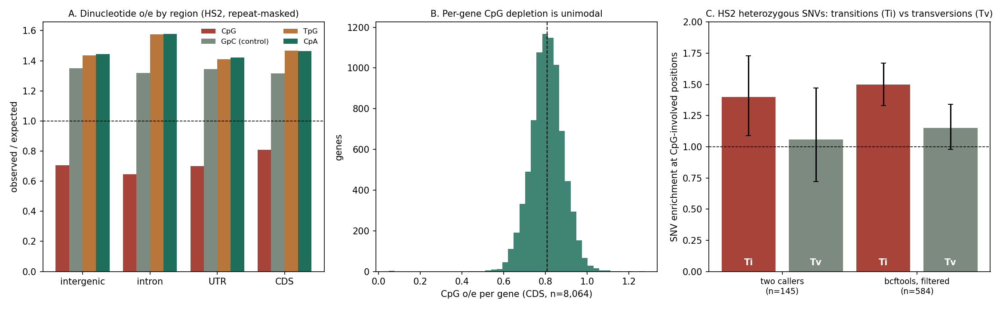

Exploratory · HS2 vs. ALE · 2026 HiFi data · 2026-10-19
No direct methylation calls exist yet: the 5mC tags were lost when the Revio reads were exported to FASTQ. This page collects every indirect, sequence-level hint we could extract from the 2026 HiFi assemblies and the HiFi heterozygous calls. The honest summary is that the hints are weak, they are not specific to either strain, and they cannot separate ALE from HS2. They are best read as a reason to request the original instrument BAMs, not as findings.
| Data | Methylation information? |
|---|---|
| HS2 and ALE reads, FASTQ/FASTA exports (SMRT Link “Export Reads”) | No. Read headers are only movie/zmw/ccs; modification tags were not exported. |
| All local alignments (HS2/ALE on HS2 and on ALE, 70+ BAMs checked) | No. Zero reads carry MM/ML tags. |
| Revio SMRT Link analysis outputs (jobs 658 HS2, 659 ALE) | The page lists a “Methylation” JsonReport for each, which implies the instrument called CpG 5mC. The report contents are not on our machines. |
| Original demultiplexed HiFi BAMs | Not found on C:, WSL, D: or E:. They would have to come from the sequencing facility. |
| HS19 and HMF | Illumina short reads only; no methylation information without bisulfite/EM-seq or HiFi re-sequencing. |
Even when the BAMs are recovered, Revio’s on-instrument calling covers CpG 5mC only. Non-CpG methylation and 6mA, reported in some green algae, would need the underlying kinetics and a different tool.

Methylated cytosines deaminate to thymine, so DNA with a long methylation history loses CpG and gains TpG and CpA. In the HS2 assembly (repeat-masked, GC 64.6%) CpG is observed at 0.72 of expectation while the reverse dinucleotide GpC, which is not subject to that decay, is at 1.33; TpG and CpA are both at about 1.5.
| Region | Mb | GC | CpG o/e | GpC o/e | TpG o/e | CpA o/e | CpG / GpC |
|---|---|---|---|---|---|---|---|
| Intergenic | 6.8 | 61.1% | 0.71 | 1.35 | 1.44 | 1.44 | 0.52 |
| Intron | 22.6 | 64.5% | 0.65 | 1.32 | 1.58 | 1.58 | 0.49 |
| UTR | 4.2 | 58.8% | 0.70 | 1.35 | 1.41 | 1.42 | 0.52 |
| Coding sequence | 16.0 | 67.7% | 0.81 | 1.32 | 1.47 | 1.47 | 0.62 |
| All | 51.2 | 64.6% | 0.72 | 1.33 | 1.50 | 1.51 | 0.54 |
Reading it carefully:
Genomes with mosaic methylation (some genes or domains methylated, others not) tend to show two populations of CpG o/e. We see one.
So there is no sequence-level sign of distinct methylated and unmethylated compartments. That fits either a genome with little methylation or one with uniform low-level methylation; this test cannot tell which.
CpG sites mutate faster, mostly through C→T transitions. HS2 is diploid, so its heterozygous SNVs are a snapshot of segregating mutations. We took HiFi heterozygous SNVs, excluded repeat-masked positions, and asked how often they fall at “CpG-involved” positions (a C followed by G, a G preceded by C, or the T/A that would pair into one), compared with the 32.0% of unmasked positions that are CpG-involved. Because the ancestral allele is unknown, a site counts if either allele forms a CpG.
| Call set | Transitions: enrichment (95% CI) | Transversions: enrichment (95% CI) |
|---|---|---|
| Called by both bcftools and GATK, depth/quality filtered (n = 145) | 1.40 (1.09–1.73), n = 89 | 1.06 (0.72–1.47), n = 56 |
| bcftools, depth 80–350, QUAL ≥ 50 (n = 584) | 1.50 (1.33–1.67), n = 319 | 1.15 (0.98–1.34), n = 265 |
| bcftools, relaxed: depth 60–400, QUAL ≥ 30 (n = 602) | 1.50 (1.33–1.66), n = 330 | 1.13 (0.95–1.31), n = 272 |
The direction is the one a CpG-specific transition effect predicts, and it is stable across filters: transitions are enriched about 1.5-fold and transversions about 1.1-fold. The magnitude is modest compared with the roughly 10-fold CpG hypermutability seen in heavily methylated vertebrate genomes, which points at most to low-level methylation or an older, diluted history. Two cautions: the transition and transversion intervals nearly touch, and within coding sequence alone (n = 102 in the two-caller set) both classes are enriched equally (1.37 and 1.36), so there the effect is not transition-specific. This is a suggestive hint from a few hundred SNVs in one individual, not a result.